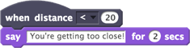

Executa um script quando a distância detectada pelo sensor de distância do LEGO WeDo for maior (ou menor) que um valor específico

Quando a distância fica abaixo de 20, o script será executado.
Você pode selecionar uma comparação maior ou menor que no menu suspenso.
O sensor de distância detecta a luz ambiente para informar a distância, então você pode usá-lo para detectar luz e movimento, além da distância.
Para usar quando distância, você precisa de um sensor de distância conectado ao seu computador por meio de um hub LEGO WeDo.